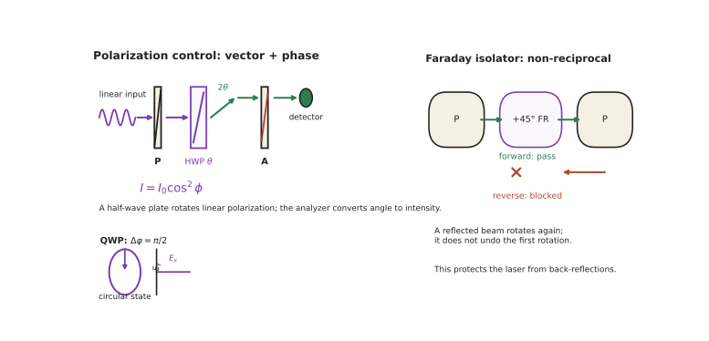

本页目录
光学 V · 偏振与晶体光学
层次：本科核心 + 多个应用方向的基础。 光是横波，电场的振动方向就是偏振。几何光学完全忽略它，但它在显示、测量、通信、量子信息中都是核心变量。本页讲清偏振的描述方法、产生与操控手段，以及它在工程中的主要用途。
学习层：同样的总功率，偏振器为什么能把它变暗？
1. 具体谜题：一块波片让“透明”变成“黑”
一束完全水平线偏振光强度为 \(I_0=1\)，后面放一个与水平成 \(45^\circ\) 的理想分析器。没有其他元件时，探测器读数是多少？若在两者之间插入快轴水平、延迟 \(\delta=\pi/2\) 的四分之一波片，输出会不会仍由马吕斯定律直接给出？最后把波片快轴转到 \(22.5^\circ\)，你预测输出变亮、变暗还是不变？
2. 先预测：Jones 够不够，还是必须 Stokes？
先写下四项预测：① 水平偏振通过 \(45^\circ\) 分析器的强度比例；② 半波片快轴转过 \(20^\circ\) 后，线偏振方向转过几度；③ 四分之一波片的相位延迟偏离 \(\pi/2\) 时，圆偏振是否仍是圆；④ 一束完全非偏振光能否用一个 Jones 矢量表示。实验会把复振幅、Stokes 分量和分析器读数同时展开，避免把“方向”和“相位”混为一谈。
3. 最小 mental model：二维复电场经过矩阵
偏振只保留横向电场的两个复分量，写成 \(\mathbf E=(E_x,E_y)^T\)。偏振片投影到透光轴，波片在自己的本征轴上给两个分量加不同相位；器件串联就是矩阵按顺序相乘。完全偏振光的相对相位可被 Jones 账本保留；部分偏振光需要强度组合的 Stokes/Mueller 账本。
4. 正式机制：投影、延迟与可测不变量
线偏振分析器轴向量 \(\mathbf a=(\cos\alpha,\sin\alpha)^T\) 的 Jones 投影可写为 \(P_\alpha=\mathbf a\mathbf a^T\)。理想线偏振输入经过分析器的强度为
快轴为 \(x'\)、慢轴为 \(y'\) 的波片在本征轴上可写作 \(J_0=\operatorname{diag}(1,e^{i\delta})\)。本页采用主动旋转
Stokes 不变量为
本页采用 \(S_3=2\operatorname{Im}(E_x^*E_y)\)，所以 \((1,i)^T/\sqrt2\) 的 \(S_3=+1\)；若采用相反符号约定，只会翻转左右旋标签，不会改变强度。等号只对应完全偏振；Mueller 矩阵才能在同一账本中处理自然光和部分偏振。
5. 静态实验：按复振幅追踪一列器件
无 JavaScript 时的静态读法：默认输入 \(\mathbf E=(1,0)^T\)，分析器轴为 \(45^\circ\)。不插波片时，\(I=|\mathbf a^T\mathbf E|^2=\cos^2 45^\circ=0.5\)。插入快轴水平的 \(\lambda/4\) 波片后，输入沿快轴，仍为 \((1,0)^T\)，所以读数仍为 \(0.5\)；若先把半波片轴放在 \(22.5^\circ\)，线偏振转为 \(45^\circ\)，同一分析器读数变为 1。对完全非偏振输入 \(S=(1,0,0,0)\)，任意理想线偏振分析器平均只透过 \(0.5\)，但它没有一个可用于保相位的唯一 Jones 矢量。脚本可切换偏振片、半波片、四分之一波片和法拉第旋转器，逐级显示复电场、Stokes 分量、DOP 与探测强度；先预测读数再解锁矩阵。
6. 反例与边界：矩阵级联不替代适用条件
- Jones 只适用于完全偏振的相干场。对非偏振或部分偏振光强行挑一个 Jones 相位会制造虚假的干涉预测；应使用 Stokes/Mueller 或统计混合。
- 马吕斯定律不是所有偏振器件的总规律。波片不主要吸收，而是改变相对相位；它是否改变强度取决于后面的分析器和轴角。
- 法拉第旋转不是普通旋转片。法拉第效应非互易，反向传播时旋转不简单抵消；忽略传播方向会错误判断隔离器是否阻断回光。
- 理想 DOP=1 不代表系统无损。真实偏振片有消光比，波片有波长依赖、温漂和应力双折射；测量矩阵需要标定而不是只看名义角度。
7. 迁移题：为一个偏振测量选账本
若要做 LCD 像素调制、测量塑料件残余应力、或在相干通信接收端跟踪随机偏振，分别需要哪类器件和哪套状态变量？请给出一条最小光路，写出一个可测的 Stokes 量或 Jones 级联，并指出哪个误差会由偏振控制器补偿、哪个必须从材料或封装中消除。

一、偏振态与描述
基本类型：线偏振、圆偏振（左/右旋）、椭圆偏振、以及非偏振（自然光）与部分偏振。
两套数学工具（用途不同，都要会）：
① Jones 矢量与 Jones 矩阵（仅适用于完全偏振光）：
优点：保留相位，可处理相干叠加，器件级联就是矩阵连乘（与第一页光线矩阵、第三页薄膜矩阵同构）。
② Stokes 矢量与 Mueller 矩阵（可处理部分偏振与非偏振）：
四个分量都是强度的组合，因而可直接测量（Jones 矢量的绝对相位不可直接测）。偏振度：
庞加莱球把偏振态映射到球面：赤道是线偏振、两极是圆偏振。波片的作用就是绕球上某轴旋转——这个几何图像在设计偏振控制系统时极其直观。
二、产生与操控偏振
① 二向色性（吸收型）：偏振片吸收一个方向的分量。便宜、宽带，但至少损失一半的自然光。
马吕斯定律：\(I = I_0\cos^2\theta\)。
② 反射（布儒斯特角）：
在布儒斯特角，反射光完全是 s 偏振。这就是偏光太阳镜与相机偏振镜的原理——水面、玻璃、路面的反射眩光主要是水平偏振的 s 光，用垂直透光轴的偏振片即可滤除。摄影中"偏振镜能压暗天空、消除水面反光"正源于此。
③ 双折射（晶体）：各向异性晶体中，o 光与 e 光折射率不同。
- 偏振分束：格兰-泰勒、沃拉斯顿棱镜；
- 波片：利用相位延迟 \(\Delta\varphi = \frac{2\pi}{\lambda}\Delta n\,d\)
- \(\lambda/2\) 波片：旋转线偏振方向（转 \(2\theta\)）；
- \(\lambda/4\) 波片：线偏振 ↔ 圆偏振。
④ 旋光与法拉第效应：
- 法拉第旋转（磁致）是非互易的——光反向传播时旋转不抵消而累加。
- 这个非互易性是光隔离器的物理基础：\(45°\) 法拉第旋转 + 两个成 \(45°\) 的偏振片 → 正向通过、反向阻断。
- 为什么必需：激光器对回光极其敏感，反射回腔内会造成功率与频率不稳定甚至损坏。几乎所有精密激光系统与光纤通信发射端都必须配隔离器（第十三页）。
三、几个重要应用
① 液晶显示（LCD）——这是偏振最大规模的工业应用（第十六页详述）：
结构是"起偏器 + 液晶层 + 检偏器"。液晶分子在电场下改变取向 → 改变对偏振的旋转 → 与检偏器配合实现亮暗。
代价：起偏器至少吞掉一半光，这是 LCD 效率天然低于 OLED（自发光、无需偏振片）的根本原因之一。
② 应力双折射（光弹性）：透明材料受力时产生双折射，正交偏振下呈现彩色条纹 → 可视化应力分布（🔗 机械站：这是有限元普及前的主要实验应力分析手段，至今用于验证与教学）。
它也是一个工程问题：塑料镜片、玻璃基板中的残余应力会引入不希望的双折射，在精密偏振系统（光刻、显示、干涉测量）中必须控制。
③ 椭偏仪（ellipsometry）：测量反射引起的偏振态变化，反演薄膜厚度与折射率，精度可达亚纳米。这是半导体产线的标准量测手段（🔗 微电子站：薄膜厚度监控）。
④ 偏振成像：物体表面的反射会改变偏振态 → 可用于区分材质、去除反光、检测表面缺陷、水下与雾天成像。近年偏振传感器（片上偏振片阵列）使其走向实用。
⑤ 通信与量子：
- 偏振复用：光纤中用两个正交偏振各传一路 → 容量翻倍（第十三页）；
- 量子密钥分发：偏振态编码量子比特（第十九页）。
四、偏振在光纤中的麻烦
理想的圆对称光纤中，两个偏振模式简并。但真实光纤有微小的椭圆度与应力 → 双折射 → 两偏振模速度不同。
后果：
- 偏振模色散（PMD）：脉冲展宽，限制高速长距系统；
- 偏振态随温度、弯曲、振动随机漂移 → 接收端必须做动态偏振跟踪；
- 保偏光纤（PMF）通过故意引入强双折射把偏振锁定在一个轴上——用"更大的确定性缺陷"压制"随机的小缺陷"，这是一个漂亮的工程思路。
现代相干光通信系统的做法：不去对抗偏振漂移，而是用数字信号处理在接收端实时解偏振（第十三页）——"把光学难题转成数字问题"，与 🔗 微电子站第九页的主旋律完全一致。
五、要点
- Jones 处理完全偏振（保相位），Stokes/Mueller 处理部分偏振（可测量）；庞加莱球给出直观几何；
- 布儒斯特角反射光全是 s 偏振——偏光镜消除眩光的原理；
- 法拉第旋转的非互易性是光隔离器的基础，而隔离器是保护激光器的必需品；
- LCD 是偏振最大的工业应用，偏振片的一半损耗是其效率短板；
- 椭偏仪是半导体薄膜量测的标准手段；
- 光纤中偏振随机漂移，现代做法是用 DSP 在接收端解偏振而非物理对抗。
线一结束：光的两种描述已经完整。下一线转向光从哪里来——激光的原理，以及为什么它与普通光源有本质区别。